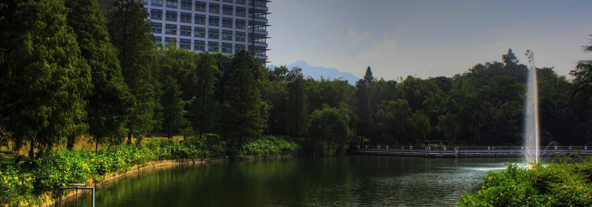
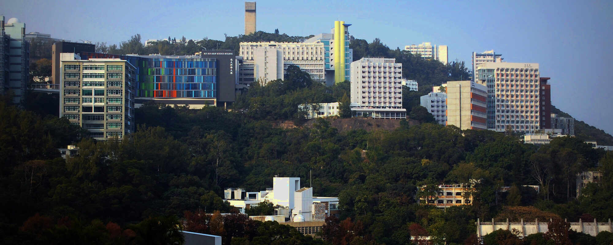
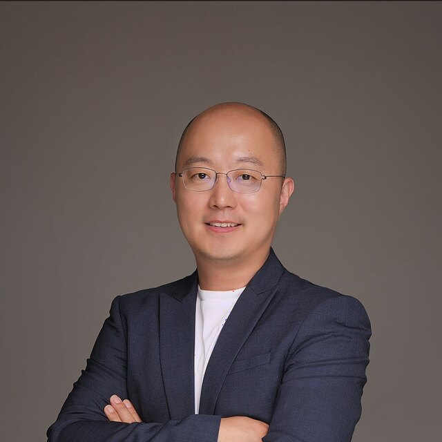

6th Symposium · Hong Kong
An annual gathering of the quantitative phase imaging community in Asia, bringing groups in the region together in person to share recent work in label‑free, quantitative and three‑dimensional imaging.

The scientific programme runs for a full day on the Friday, with a welcome reception the evening before and an excursion on the Saturday.
The day is built around six invited talks, three in the morning and three in the afternoon, together with a poster session. Selected posters are introduced in a short lightning round, and participants vote for the best poster.
Quantitative phase imaging measures the optical path a specimen imposes on light, and that single measurement carries a long way. It gives dry mass and refractive index in a living cell, surface figure and film thickness on a semiconductor wafer or a glass substrate, and — through the same phase retrieval — structure at atomic resolution in electron tomography.
The symposium is built around the measurement rather than the specimen. Talks run from optics and reconstruction algorithms through biology and medicine to materials, metrology and inspection, and we would rather the programme were broad than tidy.
The 2026 speaker list is being finalised and will be announced here. Across the 5 previous editions the symposium has hosted 38 invited talks — see past editions.
Registration opens in September.
The meeting is held at The Chinese University of Hong Kong. Most international visitors do not require a visa to enter Hong Kong, which makes this an unusually easy meeting to reach for colleagues across the region. Information on accommodation will be posted here.

Saturday is given over to an excursion, so there is time to see the city as well as the meeting.
The symposium is in person only — there is no online attendance. Bringing the community into one room for a day is the point of the meeting, and remote participation has not served that well in the past.
